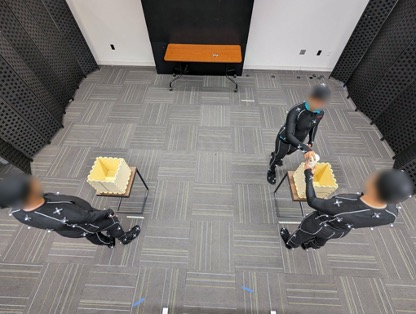
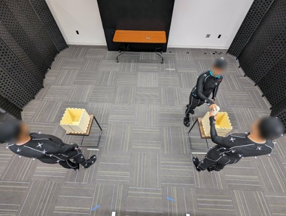
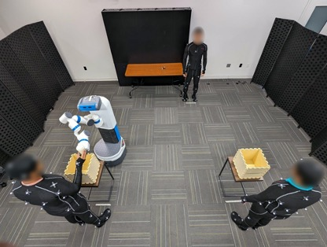

Human-Human Collaboration Scenarios
Comprises Human-Human Collaboration (3 Humans) data on a simulated assembly task
As robots enter human workspaces, there is a crucial need for robots to understand and predict human motion to achieve safe and fluent human-robot collaboration (HRC). However, achieving accurate human motion prediction remains a significant challenge due to the lack of large-scale datasets capturing close-proximity HRC and the lack of efficient, generalizable algorithms that can reliably predict the motion of multiple humans in human-robot teams.
To address these challenges, we introduce INTERACT, a comprehensive multimodal dataset comprising 3-D Skeleton data, RGB+D data from two viewpoints, ego-view, eye-tracking, and gaze data of two participants, and robot joint data, covering both human-human and human-robot collaboration in teams. Next, to address the gap in learning algorithms to predict multi-human motion accurately, we propose PoseTron, a novel transformer-based encoder-decoder architecture that can generalize to multiple agents and utilize various data modalities.
One of PoseTron’s key contributions is the novel conditional attention mechanism in the encoder, enabling efficient extraction and weighing of motion information from all agents to incorporate team dynamics. Additionally, the decoder introduces a novel multimodal attention mechanism, which weights representations from different modalities and the encoder outputs to predict future motion accurately. We extensively evaluated PoseTron by comparing its performance on human-human and human-robot collaboration scenarios from the INTERACT dataset against stateof- the-art multi-agent motion prediction methods. The results suggest that PoseTron outperformed all other methods across all the scenarios and evaluated temporal horizons. Furthermore, we conducted a comprehensive ablation study that underscores the architectural and multimodal design choices. The superior performance of PoseTron provides a promising direction to integrate motion prediction with robot perception and enable safe and effective HRC.
It features:

Comprises Human-Human Collaboration (3 Humans) data on a simulated assembly task
Comprises Human-Robot Collaboration (3 Humans + 1 Robot) data on a simulated assembly task
It features:
@inproceedings{yasar2024posetron,
author={Mohammad Samin Yasar and Md. Mofijul Islam and Tariq Iqbal},
title={PoseTron: Enabling Close-Proximity Human-Robot Collaboration Through Multi-human Motion Prediction},
booktitle={Proceedings of the 2023 ACM/IEEE International Conference on Human-Robot Interaction},,
year={2024}
}